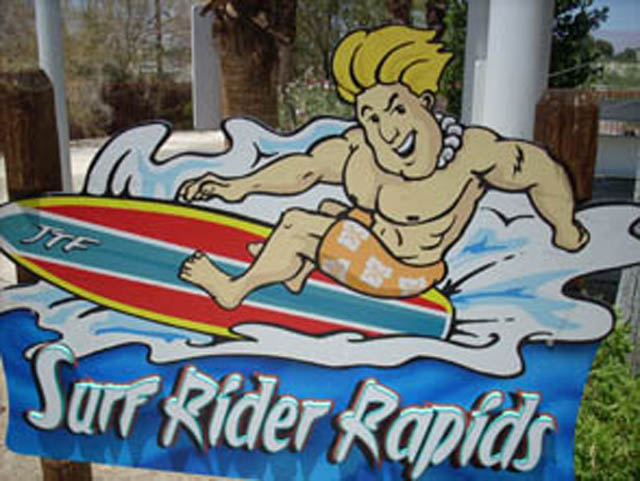

| |

Surf Rider Rapids Photos

We're heading back in time, to when not only was Wet'N'Wild Palm Springs still standing, but it was Soak City Palm Springs. Because today, we'll be reveiwing Surf Rider Rapids. One of the more...Screw it. I have a real soft spot for this slide. First thing you did was get your tube up the stairs. The unusual thing about these tubes is that they were 3 person tubes. So no single riders allowed. Then once you and your partner(s) got to the top, you set the tube in the water and hopped on in. Then when it was clear, the lifeguard would push you foreward and away you went. First you went through a small helix. You didn't go through it very fast, but don't worry, soon you'll gain speed as you went down. Then you headed into a ground hugging helix. And then you went through the mist and down the final drop. The final drop was a lot of fun, and will make you giggle through out the chute. While Surf Rider Rapids may not have been the most intense exprience in the world, it was definetly a lot of fun and I will miss this ride. Hope there are more water slides like this out there.
7/10
Location: Wet 'N' Wild Palm Springs
Opened: 1999
Died: 2019
Built by: I honestly don't know.
Last Ridden: June 26, 2007
Surf Rider Rapids Photos




Home
|